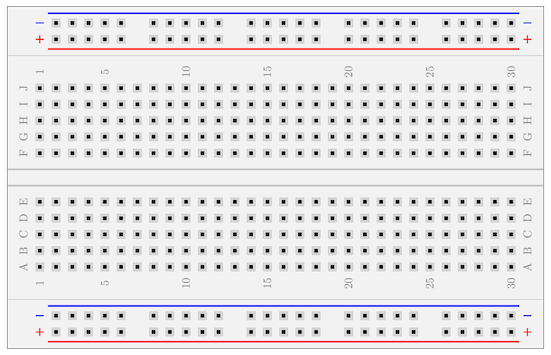

Breadboard
Para aprender a construir un circuito o verificar su funcionamiento, debe usar primero una placa de pruebas, es una de las herramientas más básicas y sencillas que existe. Gracias a sus numerosos conectores pequeños, se pueden insertar o quitar diversos componentes electrónicos según sea necesario, eliminando la necesidad de soldar y ahorrando tiempo de montaje. Los componentes se pueden reutilizar, lo que la hace ideal para el desarrollo de circuitos electrónicos.

Si hubieras querido construir un circuito antes de la década de 1960, probablemente usarías una técnica llamada “wire-wrap”, que consiste en envolver cables alrededor de; postes, tornillos, clavos o pines conductores conectados a la misma placa de pruebas (protoboard). Esta técnica es compleja y engorrosa. Todavía se utiliza hoy en día.
Origen del nombre
El nombre de placa de pruebas se remonta a la época de los circuitos de válvulas. En aquel entonces, la mayoría de los componentes de los circuitos eran de gran tamaño. Se solían usar tornillos y clavos para fijarlos a un trozo de madera que se usaba para cortar el pan. Con el tiempo, el tamaño de los componentes de los circuitos se redujo cada vez más, pero se conservó el nombre de placa de pruebas (Breadboard).
Especificación
Las placas de pruebas vienen en diferentes tamaños, la mayoría de las placas de pruebas tiene protuberancias y ranuras en los cuatro lados, de modo que se pueden unir placas de pruebas del mismo tamaño, aumentando el espacio disponible. Algunas otras tienen un adhesivo para facilitar su fijación a diferentes instrumentos.
Estructura
Toda la placa está hecha de plástico resistente, con una tira metálica en la parte inferior. Se perforan orificios en las posiciones correspondientes de la placa para que los componentes entren en contacto con la tira metálica al insertarse, logrando así la conductividad. Suele haber una ranura en el centro de la placa, diseñada para pruebas de circuitos integrados y chips. Hay dos filas de conectores verticales llamadas rieles de alimentación a ambos lados de la placa para alimentar los componentes.
1. Rieles de potencia
Hay dos columnas de conectores en la parte superior e inferior de la placa de pruebas, que generalmente se utilizan para alimentar la placa. La primera fila, marcada con “+” y con una línea roja representa el positivo. La segunda fila, marcada con “-” y con una línea azul representa el negativo. La primera y la segunda fila, en la parte inferior de la placa de pruebas, tienen la misma estructura que las anteriores. Si necesita usar toda la placa de pruebas, normalmente conecta los conectores “+” y “+” con un cable, y los conectores “-” y “-” con otro cable.
2. Riel de cableado
Los orificios de conexión se dividen en partes superior e inferior, que constituyen nuestra principal área de trabajo para conectar piezas y puentes. Los cinco conectores de la misma columna (es decir, abcde, fghij) están interconectados; las columnas (es decir, 1-30) y las partes superior e inferior de la ranura (es decir, e-f) no están conectadas.
3. Ranuras
Hay una ranura larga en el medio de la placa de pruebas, que cumple dos funciones. La primera es separar la parte superior de la inferior con el fin de poder insertar un circuito integrado estándar de pines DIP. La segunda razón es que los circuitos integrados tienen muchos pines, no suelen ser fáciles de extraer. Si se extraen con fuerza, es fácil doblarlos o incluso romperlos. Esta ranura permite usar pinzas o algo similar para acceder a la parte inferior del circuito integrado y facilitar su extracción.
Breakout PCB
En la actualidad existen muchos componentes que su encapsulado es de tipo SMD (Surface Mount Device) y al no tener pines no se pueden usar directamente en la placa de pruebas, por lo que se debe usar de una PCB con pines DIP que tenga el footprint del componente SMD a soldar.
Uso y precauciones
- Al instalar componentes discretos, debe poder ver su polaridad y marcas. Enderece los pines del componente y dóblelos donde sea necesario. Para evitar cortocircuitos en los cables expuestos, utilice cables con fundas. Generalmente, los pines del componente no se cortan para facilitar su reutilización. Por lo general, no inserte componentes con un diámetro de pin superior a 0,8 mm para evitar dañar la elasticidad de la pieza de contacto dentro del zócalo.
- Las patillas de los circuitos integrados (CI) que se han usado repetidamente deben repararse con cuidado. No deben doblarse y deben estar ligeramente hacia afuera para que los ángulos de los cables puedan conectar correctamente con los zócalos. La disposición de los componentes en la placa de pruebas debe determinarse según el diagrama del circuito para facilitar el cableado. Para un cableado correcto y facilitar el rastreo de cables, la dirección de inserción de todos los CI debe ser la misma y no deben insertarse al revés para facilitar el cableado temporal ni para acortar la longitud del cable.
- Según el orden del flujo de señal, utilice el método de depuración durante la instalación. Tras instalar los componentes, conecte primero el cable de alimentación y el cable de tierra. Para facilitar la inspección del cable, utilice diferentes colores para la conexión. Por ejemplo: la fuente de alimentación positiva generalmente usa un cable rojo. Si la placa de pruebas usa una fuente de alimentación negativa, utilice un cable azul, un cable de tierra y un cable de señal amarillo. También se pueden usar otros colores según las condiciones.
- La placa de pruebas debe usar cables monofilares con un diámetro aproximado de 0,6 mm. Corte los cables según la distancia entre ellos y la longitud del conector. Los extremos de los cables deben cortarse en biseles de 45°. La longitud pelada de los extremos de los cables debe ser de aproximadamente 6 mm. Todos los cables deben insertarse en la placa inferior para asegurar un buen contacto. Los cables pelados no deben quedar expuestos para evitar la desconexión con otros cables.
- Los cables deben colocarse cerca de la placa de pruebas para evitar colisiones y desprendimientos, lo que podría causar un mal contacto. Los cables deben rodear el circuito integrado y no deben conectarse a través de él ni superponerse. Deben estar los más rectos y horizontales posibles, lo que facilita la comprobación de los cables y la sustitución de componentes y cables.
- Es recomendable conectar un condensador con una capacidad de decenas de microfaradios entre la entrada de cada fuente de alimentación y la tierra, lo que reduce el impacto de la corriente en el transitorio. Para suprimir mejor los componentes de alta frecuencia de la fuente de alimentación, se debe conectar un condensador de desacoplamiento de alta frecuencia en paralelo en ambos extremos del condensador, generalmente un condensador monolítico de 0,01 ~ 0,047 μf.
- Durante el proceso de cableado, es necesario colocar cada componente en la posición correspondiente en la placa de pruebas y marcar el número de pin utilizado en el diagrama del circuito para garantizar una depuración y resolución de problemas sin problemas.
- Todos los cables de tierra deben estar conectados entre sí para formar un punto de referencia común.
Principios de cableado
- Minimizar el número de puntos de conexión. Añadir un punto de conexión equivale a aumentar artificialmente la probabilidad de fallo.
- Evite los sobrepasos en la medida de lo posible. Esto significa que los componentes o cables se conectan a otros componentes o cables. Los principiantes son más propensos a cometer estos errores. Hacerlo no solo causará problemas para reemplazar componentes posteriormente, sino que también hará que los usuarios pierdan la confianza cuando se produzca una falla.
- Intente que quede lo más firme posible. Hay dos fenómenos que deben tenerse en cuenta: primero, los circuitos integrados se aflojan fácilmente, por lo que, en circuitos integrados como los amplificadores operacionales, es necesario presionar con fuerza. Si no están firmes, debe cambiar su posición. Segundo, algunos componentes tienen pines demasiado delgados, así que tenga cuidado de moverlos con cuidado. Si observa que no están firmes, debe cambiar su posición.
- Conveniente para realizar pruebas. Los 5 orificios conectados a la placa de pruebas generalmente no deben estar completamente ocupados, y se debe dejar al menos uno para realizar pruebas.
- El diseño debe ser lo más compacto posible y el flujo de señal debe ser lo más razonable posible.
- El diseño debe ser lo más parecido posible al esquema. Esto ayudará a los estudiantes a localizar los componentes lo más rápido posible al resolver problemas.
- Despeje el área de alimentación lo máximo posible. Antes de cablear el circuito, divida el área de alimentación en tres zonas: positivo, tierra y negativo, y utilice cables para completar la conexión.
Proteger
- Intente evitar que entre agua, residuos y materiales en polvo en el zócalo.
- Evite conectar y desconectar bruscamente los circuitos integrados para evitar que los pines se doblen en los zócalos; no rompa los cables metálicos en los zócalos.
- No inserte cables gruesos, sondas o alfileres en los orificios.
- No fuerce la inserción de componentes.